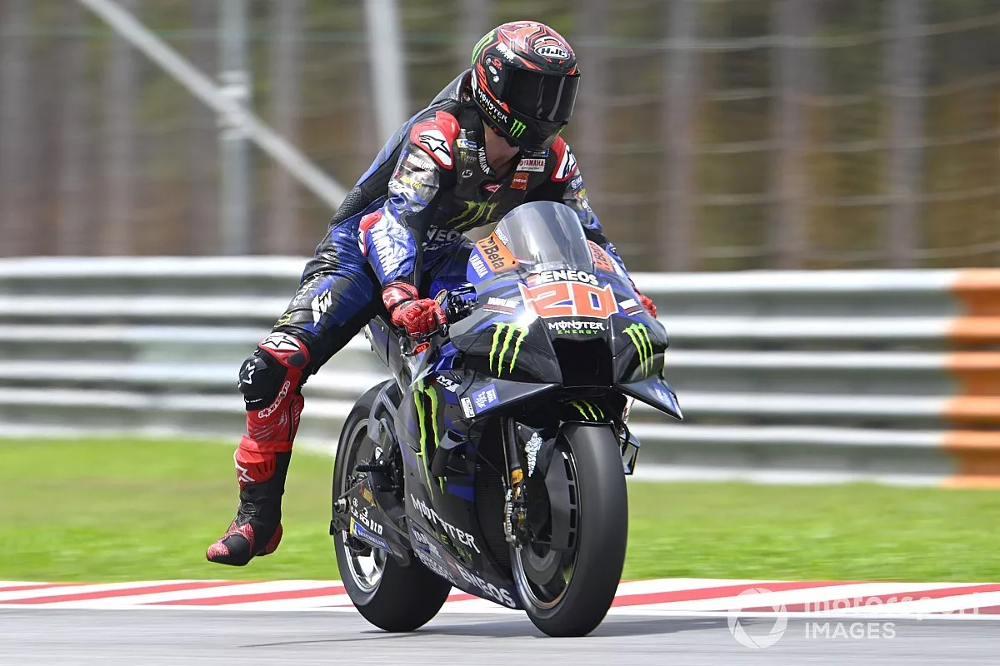
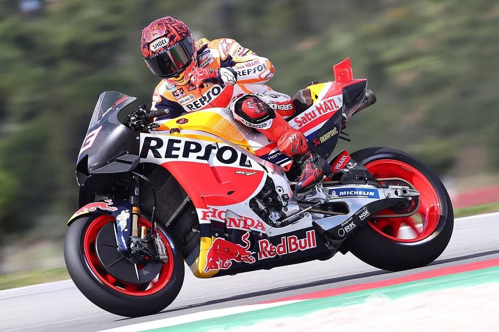

Montadora japonesa ousa com novidade aerodinâmica em busca de rivalizar com Ducati em 2023
No último fim de semana, as motos da MotoGP aceleraram no circuito de Portimão, em Portugal,
para os dois últimos dias da pré-temporada 2023. E em meio às novidades técnicas vistas pela
pista, boa parte das atenções se voltaram para a Yamaha, que colocou em sua moto uma asa
traseira no estilo de um carro de Fórmula 1.No GP da Grã-Bretanha do ano passado, a Ducati
surpreendeu o paddock com a introdução do que ficou conhecido como a "asa traseira
estegossauro", com várias fendas verticais na parte traseira do assento.

MotoGP: Márquez não vê Honda lutando por pódios no começo de 2023
Mas espanhol evita iniciar temporada 2023 com pensamento negativo
Após a conclusão dos testes de pré-temporada da MotoGP em Portugal, Marc Márquez não acredita
que a Honda tenha capacidade de lutar por pódios no começo de 2023, tendo como posição natural
da quinta a décima colocações.
A Honda não teve vida fácil nos testes de Portugal, com Márquez terminando o último dia em 14º,
logo atrás do companheiro Joan Mir. O espanhol disse que guiou a moto no domingo como fez na
pré-temporada da Malásia, e ressaltou que a RC213 havia melhorado com as mudanças nos ajustes.
